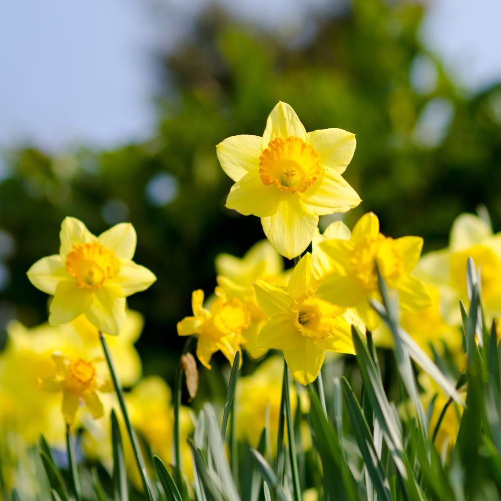
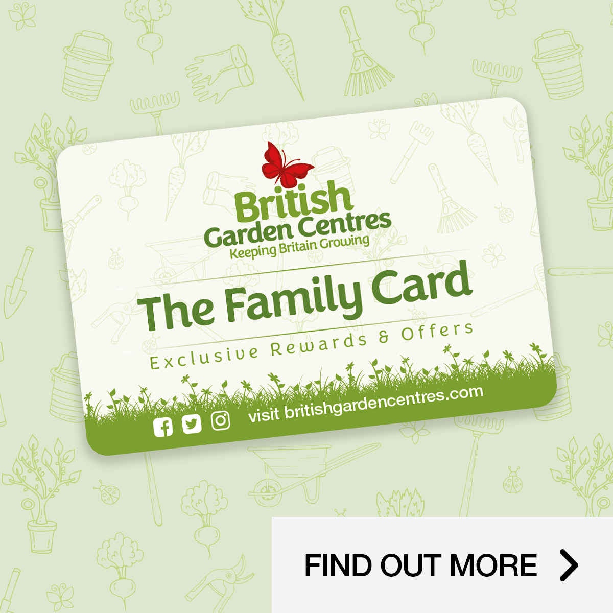
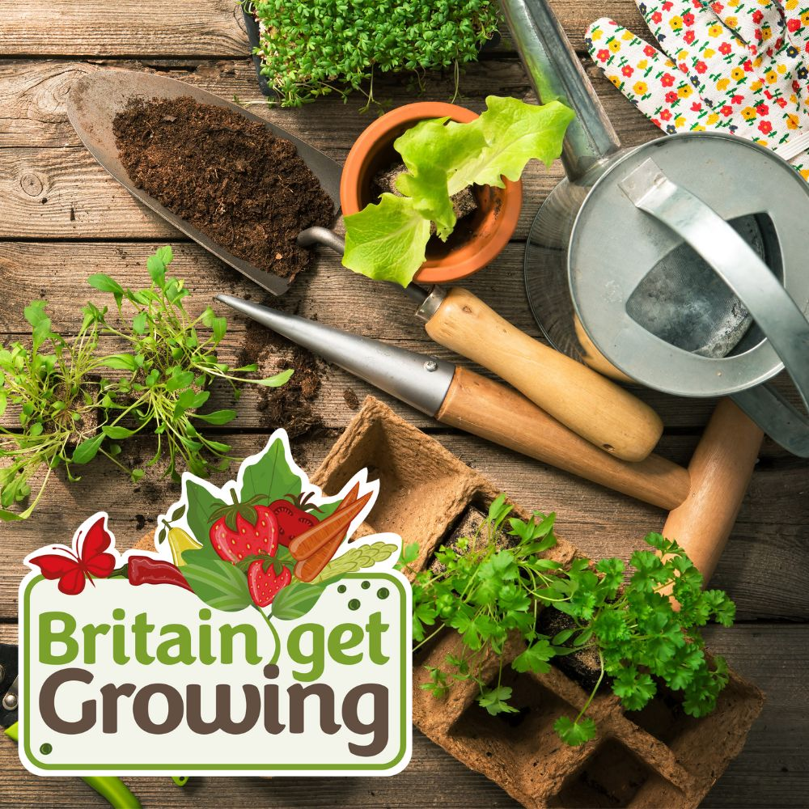
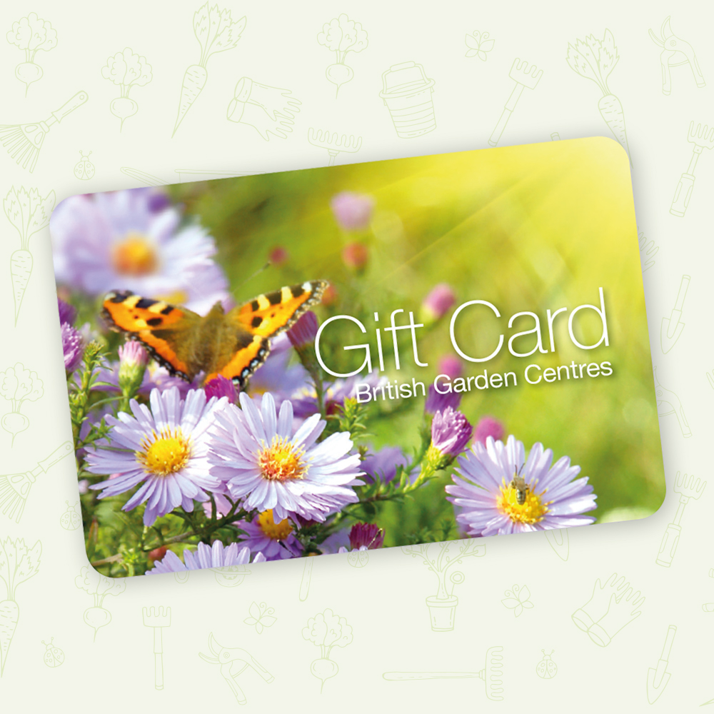

Here at Harrow Garden Centre, we have everything you need whether you are a seasoned or new gardener,
from bold and bright plants to zesty plant foods, trowels to trugs, and just about everything for
your home and garden.
Alongside our departments and restaurant, we have many in-store retail partners for you to shop with
whilst visiting. There is something for everyone here at Harrow.
Harrow Garden Centre is one of our most historical locations with it once being a war-time nursery and
started trading as a garden centre in the early 70s. We are a plant and gardening focused centre and
offer everything you need for your garden. Our expert staff are always happy to help you, whether you
are a keen gardener or just starting out. Alongside our plants we boast an extensive variety of
furniture, gifts, and so much more!
Take a break in our lovely Coffee Haven Restaurant for a refreshing drink and meal whilst shopping. We
offer a great variety of main meals, snacks, and tasty treats, from breakfast items to our amazing
Afternoon Tea which the perfect treat.
We are dog friendly, offer free parking and look forward to welcoming you.
Coffee Haven
Take a seat in our delightful coffee shop and indulge in a delicious meal from our fantastic menu,
whether you're looking for a light bite or a cake and a coffee (don't miss out on our incredible
homemade cakes and scones) Joins us for a tasty treat in Coffee Haven, we look foward to see you soon.

Spring Gardening
There are plenty of jobs to do in the garden this spring from planting Summer Flowering bulbs, sowing
seeds, and tidying the garden ready for the warmer weather. Get everything you need for your garden this
spring at British Garden Centre. Shop online and at your local British Garden Centre. Whatever the
weather, we bring your garden together.

Family Card
Become a member of the British Garden Centres Family Card and you'll receive exclusive offers, vouchers
and invites to exclusive events throughout the year.

Britain Get Growing
Have you seen our new campaign Britain Get Growing? This year we want to encourage as many people as
possible to have a go at gardening. Visit our Britain Get Growing page for more information.
Shop Online
Have you seen our new Online Store? You can now shop British Garden Centres now 24 hours a day, 7 days a
week from the comfort of your home. Can't make it to Harrow Garden Centre? Get all your garden
essentials delivered to your door when you shop at our online store, from BBQs to gardening essentials
we have everything you need to make your garden perfect..

Gift Card
Give the gift of choice. Whether it's for Christmas, a birthday or just becasue, our British Garden
Centres Gift Cards can be used in any our centres or restaurants across the Country. Our Gift Cards are
avaliable in a range of beutiful designs and can be purchased in-store or online.